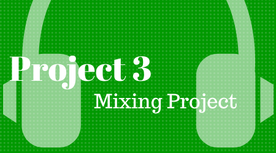

You will mix a stereo track from the projects provided below and submit a downloadable link to your final mix file.
Mixing
Choose a Mix Project. They are in Logic X file format. If you plan to complete your project in a different DAW you will need to open the project on a lab computer and export each track as a WAV file.
Create a “good” mix. Balance all the tracks. Add compression, reverb, panning, delay, etc. tastefully, as required. Use your own judgement (and those high quality cans you bought for class).
Follow the guidelines starting on page 467 in the book. Follow each step for mixing and balancing as we did in class. Remember, the goal is make your final bounce “pleasing”.
No tracks should peak or distort in your mix. Neither should the complete mix. If vocals are present, they should be adjusted for the style of music recorded. Listen to other songs in the genre if needed to get mix ideas.
Bounce your final mix to a high quality mp3 file with a name that includes your name and “final_mix”. E.g. “sable_cantus_follow_you_final_mix.mp3”.
Making Notes
Make notes of your work separately as you go. You will include a brief list of what you did to the music during the process. Include general information such as:
You should have a few things (4–6) on your list.
Submitting Your Project
Send me a download link to your final project. Please include your notes in your email.
You will have time in class to complete this assignment.
Please Note
This project does not include creating new musical tracks, recording new drum parts, or converting the song from one genre to another. Please mix within reason of the style of the music in order to achieve maximum points.